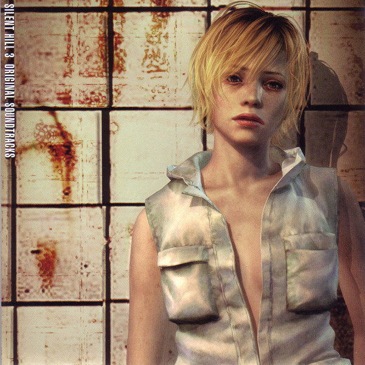
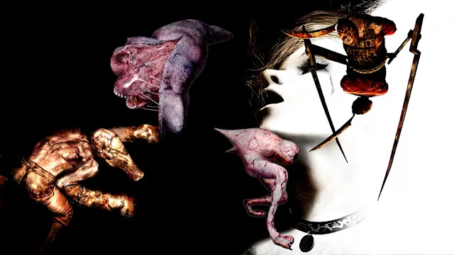

Silent Hill 3 continúa la historia de la serie con una atmósfera aún más oscura y perturbadora. La protagonista, Heather, se encuentra atrapada en un mundo lleno de horrores y debe descubrir la verdad detrás de su pasado.
El juego es conocido por su impresionante diseño de sonido y su capacidad para crear una sensación constante de miedo y tensión. Los gráficos también fueron mejorados significativamente, ofreciendo una experiencia visualmente impactante.
Heather es uno de los personajes más memorables de la serie, y su viaje a través de Silent Hill es mucho más emocional que las demás. No tengo una experiencia personal tan amplia con Silent Hill 3, ya que al momento de escribir esto, estoy en proceso de jugarlo. Pero con lo mucho que me han encantado los otros 2 juegos y Signalis, estoy seguro de que lo amaré de igual manera.
Los monstruos en Silent Hill 3 son algunos de los más aterradores de la serie, cada uno diseñado para reflejar los miedos y traumas de la protagonista. Estos son mucho más creativos en mi opinión, teniendo monstruos con diseños mucho más elaborados.
back to the principal page